The journey behind every glass
Turn on a tap in Perth and clean water comes out. To many, that’s where the story ends. But behind every tap is a journey that starts at one of several sources and passes through treatment, delivery, use, retreatment, and release or (increasingly) reuse. In our drying climate, every one of these steps needs to be examined carefully if we are to improve outcomes in the water industry.
2026 is projected to bring one of the strongest El Niño events on record, and under a warming climate, conditions like these are likely to become increasingly normal (Climate Impact Lab, 2026).
Around the world, 2.1 billion people lack safely managed drinking water, and 3.4 billion lack safely managed sanitation (WHO/UNICEF Joint Monitoring Programme, 2025). This blog follows water on that journey, asking how water services are provided, how they can be improved and what a sustainable and just future might look like.
We start with where our water traditionally comes from, from groundwater and dams to (in the 21st century) desalination, then investigate how it is treated and delivered in case-study locations, and explore how it is used, who pays for it and how it is regulated. Finally, we follow wastewater after the flush to see whether it can become an energy and nutrient resource, and even drinking water again. Throughout, we link each step to the UN Sustainable Development Goals (SDGs), especially SDG 6, Clean Water and Sanitation.
What Happens When Groundwater Runs Low?
When people think about Perth’s water supply, they may first think about dams, rivers or desalination plants. However, one of Perth’s most important water sources is hidden beneath our feet.
The Gnangara groundwater system is Perth’s largest natural water resource. It lies beneath the northern part of Perth and contains three main aquifers: the shallow Superficial aquifer, commonly known as the Gnangara Mound, and the deeper Leederville and Yarragadee aquifers. Groundwater from this system is used for drinking water, horticulture, industry, parks, gardens and public spaces. The system provides almost half of all water used in the Perth metropolitan area each year (Department of Water and Environmental Regulation [DWER], 2022).
Figure 1 shows that Gnangara is not simply one large underground tank. It is a layered groundwater system, with water moving between different aquifers and towards the coast.
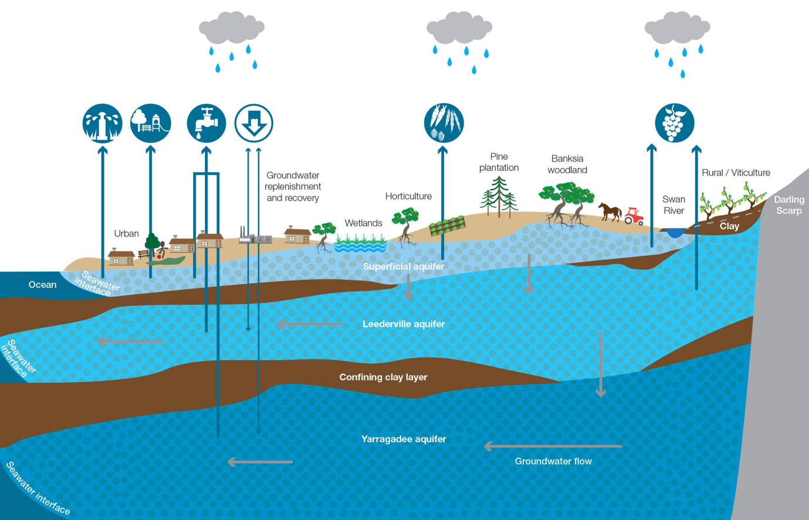
Figure 1. Cross-section of the Gnangara groundwater system and its major aquifers
Note. From Gnangara groundwater allocation plan: Methods (Department of Water and Environmental Regulation, 2022).
The problem is that this underground water source has been under increasing pressure for decades. Perth is getting drier. South-west Western Australia has experienced a major change in rainfall. Since the mid-1970s, average annual rainfall has declined by about 15%. This may not sound like a huge change, but the effect on Perth’s water system has been much larger. Average streamflow into Perth’s drinking water dams has fallen by around 80% (DWER, 2026).
Less rainfall also means less water available to recharge groundwater. Groundwater recharge happens when rainfall soaks through the soil and eventually reaches the aquifer below. However, the relationship between rainfall and recharge is not proportionate. A small decrease in rainfall can cause a much larger decrease in groundwater recharge.
Research on the Swan Coastal Plain found that a reduction in rainfall of around 20% was associated with approximately a 50% reduction in potential groundwater recharge(DWER, 2025).. Under Banksia woodland, the reduction in potential recharge was closer to 70% Water levels in the Superficial aquifer have generally been declining for around 40 years. In some parts of the northern and central Gnangara area, groundwater levels have fallen by about 10m. DWER estimates that more than 1,000GL of groundwater storage has been lost from the Superficial aquifer since 1980 (DWER, 2022).
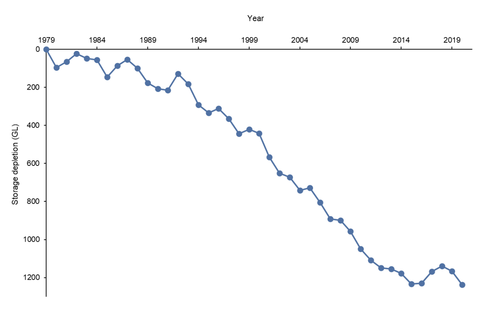
Figure 2. More than 1,000 gigalitres of groundwater storage have been lost from the Superficial Aquifer since 1980
Note. From Gnangara groundwater allocation plan: Methods (Department of Water and Environmental Regulation, 2022).
This is not just a problem for people. Many natural environments around Perth also depend on it (Groundwater Dependent Ecosystems, GDEs). Lower groundwater levels have contributed to drying wetlands (notably Loch McNess), changes to the Yanchep cave ecosystems and increasing acidity in several lakes (DWER, 2026). More than half of the monitored sites used to assess groundwater-dependent ecosystems are now below their minimum safe groundwater levels (DWER, 2026).
Understandably, this is because groundwater scarcity is more difficult to notice; when a dam becomes empty, people can see the water level dropping. Groundwater depletion happens underground. By the time we notice drying wetlands or lower bore levels, a large amount of water may already have been lost.
Perth is not alone
Perth’s groundwater problem is part of a much wider challenge. Around the world, groundwater is often a core part of the supply, particularly when rainfall or surface water becomes less reliable. However, if pumping continues faster than natural recharge, the same source can gradually become depleted (Faunt et al., 2024).
California’s Central Valley provides a useful comparison. The region relies heavily on groundwater, particularly when surface water is limited during dry periods. Long-term pumping has caused falling groundwater levels, loss of groundwater storage, and land subsidence, where the ground surface slowly sinks as underground sediments compact (Faunt et al., 2024). Figure 3 shows that groundwater-pumping-related subsidence affects a large area of California, particularly the Central Valley.
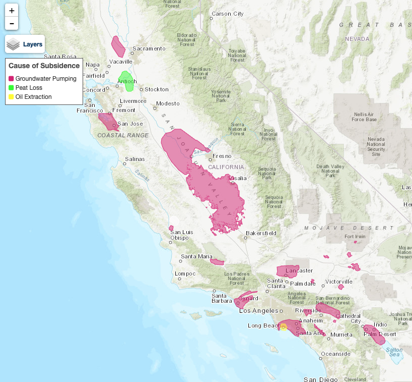
Figure 3. Areas affected by land subsidence in California, including areas linked to groundwater pumping
Note. From Areas of land subsidence in California (U.S. Geological Survey, 2018).
However, Perth and California are not the same. Water use in the Central Valley is strongly dominated by large-scale agriculture, while the Gnangara system supports Perth’s drinking water, horticulture, public spaces and GDEs. However, both cases show the same basic problem: groundwater can be a valuable part of a resilient water network, but it cannot be treated as an unlimited reserve.
Water scarcity can also become a much more visible urban crisis. Cape Town in South Africa came dangerously close to “Day Zero” when during a severe drought, the city prepared for the possibility that normal water supplies could become critically limited. The city later described the experience as “a major lesson in building resilience” to drought and climate change (City of Cape Town, 2019).
Cape Town is not a direct groundwater comparison with Perth, but it provides an important warning - water security can change from a long-term environmental issue into an immediate problem for an entire city.
What should Perth do?
The challenge is not to stop using groundwater completely. Gnangara will remain an important part of Perth’s water supply (Water Corporation, 2021). Instead, groundwater needs to be used at a rate that better matches how much water can naturally return to the system.
This is why groundwater management is closely connected to Sustainable Development Goal (SDG) 6. SDG 6 focuses on clean water and the sustainable management of water resources. For Perth, this means using groundwater carefully while also protecting wetlands, lakes and other ecosystems that depend on it (United Nations, n.d.-b).
The issue also connects to SDG 13, Climate Action. Climate action is not only about reducing greenhouse gas emissions. It also includes adapting to climate impacts that are already happening. In Perth, lower rainfall and reduced groundwater recharge mean water planning needs to adapt to a drier future (United Nations, n.d.-a).
The most important lesson from Gnangara is that groundwater scarcity can remain hidden for a long time. A nearly empty dam is easy to see, but groundwater decline happens below our feet. By the time the effects become obvious, irreversible changes may already have occurred. Groundwater is still one of Perth’s most valuable water sources, but it is not unlimited. The real challenge is making decisions now so that this hidden resource is still available in the future.
From the Sky to the Sea: Desalination
So, the dams are half empty and the groundwater underneath us cannot be replenished fast enough. If the sky is not topping up the taps and providing the capacity it once did, where will we get our water from? For much of the world, the answer is the sea.
There are roughly 15,906 desalination plants running in 177 countries today, and together they turn about 95 million cubic metres of seawater into drinking water every day (Jones et al., 2019). Plenty of countries have rebuilt their water supply around the premise that the ocean won’t run out of water, and with good reason: the world’s oceans hold an estimated 1.335 billion km³ of water (National Oceanic and Atmospheric Administration, 2024). To put this scale into perspective, if humanity somehow relied entirely on direct drinking from the oceans, it would take roughly 150-220 million years to consume an amount of water equivalent to the volume of the world’s oceans, assuming each person drank around 2-3 litres per day.
Geography has already forced a change (World Bank Group, n.d.). In areas of the Middle East, countries with arid climates and ocean borders have made an obvious choice, switching to desalination for ongoing water supply and security. Israel in particular shows how far this can go with multiple plants along its Mediterranean coast. By the end of 2026, these will provide 90% of their potable water supply (Government of Israel, n.d.). Qatar gets more than 99% of its drinking water from desalination and Bahrain more than 90% (Michel, 2026), while the region runs over 400 plants and makes close to 40% of the world’s desalinated water (Abdelraouf, 2024).
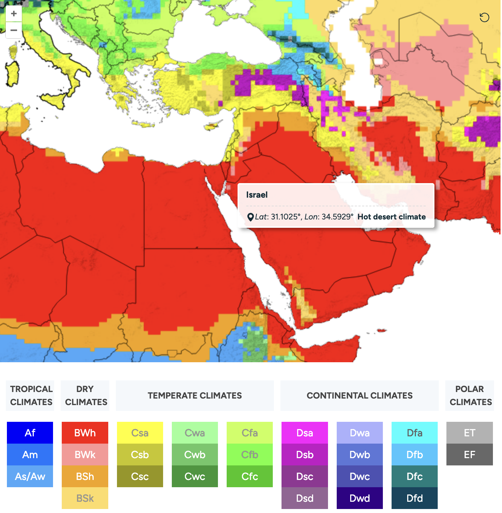
Figure 4. Israel climate and rainfall: Hot and dry
Note. Source: World Bank Group (n.d.).
How reverse osmosis works
Almost 80% of the world’s desalinated water is produced using reverse osmosis (International Energy Agency, 2026). Seawater is pushed at very high pressures against a membrane with pores that let through the water but not the salt. This leaves two solutions, one that is considered fresh water and one that is considered high concentrate brine as seen in Figure 5 (Sea Recovery, n.d.). However, moving large volumes of seawater through a membrane with pressure takes significant amounts of energy. In today’s world, this means cost.
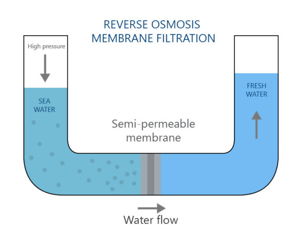
Figure 5. Reverse osmosis process
Note. Source: Sea Recovery (n.d.).
Desalination locally: Perth’s water transition
Over the past few decades, Western Australia went hunting for a water supply that does not depend on the weather and changing climate and was one of the first states in Australia to move towards desalination. Two seawater plants now cover about half of Perth’s drinking water. The first sits at Kwinana which opened in 2006 as Australia’s first large seawater plant of its kind and makes around 45 gigalitres a year, close to 18% of the city’s supply (Water Corporation, 2018). The second, the Southern Seawater plant at Binningup, became operational in 2011 and can produce up to 100 gigalitres a year, nearing 33% on average (Water Corporation, 2018). A third is being constructed up at Alkimos in response to our water demands and drying climate.
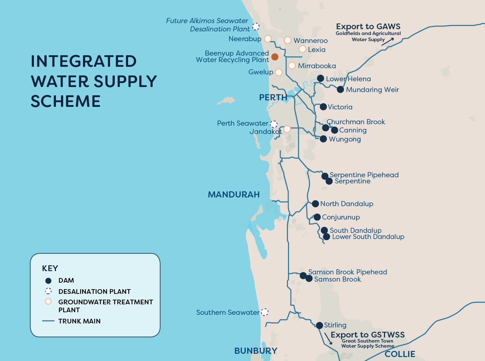
Figure 6. Perth water network and seawater supply
Note. Source: Water Corporation (2026b).
The sustainability paradox: SDGs 6, 7 and 13
There is always a trade-off: desalination never runs dry, but it is very hungry for power. The Water Corporation has stated that it uses roughly four times the energy of pumping groundwater and more than forty times the energy of drawing from a dam (Parliament of Western Australia, 2024). Burning fossil fuels to meet that demand is counterproductive, because it powers a technology built to cope with a warming climate while adding to the warming.
A lot of Gulf desalination still runs on natural gas because it is cheap, which is the same paradox in action: a solution to water scarcity that adds to climate change (International Energy Agency, 2026).
The Water Corporation has acknowledged this and is offsetting plants with renewable energy sources: Kwinana is powered by the Emu Downs Wind Farm, and the Southern Seawater Plant is offset in much the same way through wind and solar (Auditor General for Western Australia, 2007). However, it is not a sealed loop, since the plant and wind farm are joined through the shared grid rather than a private line. Even so, the principle sets a precedent for sustainable fresh water supply in Western Australia (Auditor General for Western Australia, 2007).
This is where SDG 7 and SDG 13 need to be balanced, with solutions designed to achieve both. SDG 7 calls for affordable and sustainable energy, through increasing application of renewables, while SDG 13 focuses on tackling climate change through decreasing reliance on carbon fuels (RET International, n.d.). Desalination is a compromise of several SDGs: on one hand it can deliver clean water and improve water security (as per SDG 6), but if the energy powering it comes from carbon fuels, solving one problem can add to another with a questionable sustainability impact. This highlights the importance of linking desalination to clean energy.
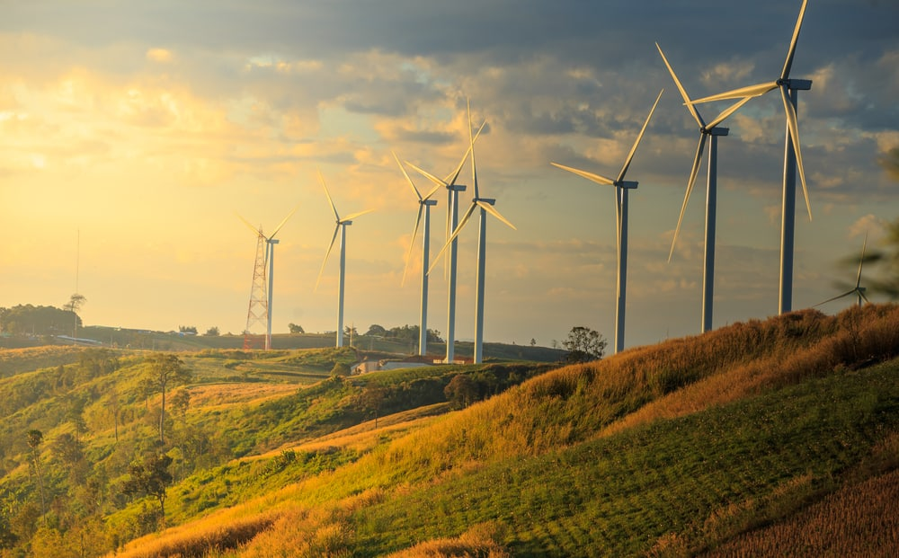
Figure 7. Emu Downs Wind Farm
Note. Source: Utility Magazine (2019).
The brine problem nobody sees
Energy at least gets talked about when it comes to desalination, but its by-product, brine, barely does. Because brine is highly concentrated, its density causes it to sink and settle near the seabed. This layering, known as stratification, can reduce mixing, oxygen replenishment and nutrient flows, which can harm marine life (“Impacts of desalination brine discharge”, 2024; BMT Western Australia Pty Ltd, 2019). This is a useful reminder that the ocean we rely on for freshwater is the same ocean receiving the concentrated brine. This links to SDG 14, Life Below Water, which focuses on protecting and sustainably managing our oceans and marine ecosystems.
Un-united nations: who can afford desalination?
So how can we manage the large energy cost, and the sustainable management of our ocean all the while supplying a reliable source of fresh water to our growing global population? Unfortunately, it requires significant capital investment due to the intricate nature of water infrastructure and technology. It’s evident that rich but dry geographies such as the Gulf, Israel and even Australia can afford to sustainably supply fresh water. However, many of the countries facing the worst water stresses simply cannot afford the infrastructure needed to address it. If SDG 6 really means safe water for all, then developed nations may need to play a bigger role in helping disadvantaged countries build sustainable energy and desalination infrastructure (if that is the way to provide water where water isn’t abundant). With increased partnership (SDG 17), we can meet the SDGs as a global population rather than un-united nations.
Where to next for desalination?
In a drying climate, desalination is a part of the answer, and in Perth it is already a key resource. The real question is how we can do it better, and three things stand out:
- Power the plants straight from renewables,
- Treat brine as a serious environmental hazard and work to manage it, and,
- decrease our water use.
This leaves an obvious question: now that we have produced all this water, what happens to it next?
From Source to Tap: Treating and Delivering Water
Once water has been sourced, it needs to be treated. Access to clean drinking water is a fundamental human right (United Nations General Assembly, 2010), yet in reality, access varies drastically around the world.
As mentioned, Perth’s drinking water comes from a combination of dams, groundwater, and desalination. Water from each of these sources is treated slightly differently. Desalinated water, as explained in the previous section, undergoes pre-treatment, and then reverse osmosis. Groundwater is aerated, a process in which oxygen is used to strip away dissolved gases and oxidise heavy minerals like iron and manganese, which are then physically filtered out. The aerated groundwater is then taken through catalytic filtration. Surface water also undergoes the aeration process, then coagulation and sedimentation. Water from all sources is then finally disinfected using chloramination, a stable combination of chlorine and ammonia. Unlike standard chlorination, chloramination provides long-lasting residual disinfection, preventing biological regrowth without compromising taste (National Health and Medical Research Council [NHMRC] & Natural Resource Management Ministerial Council [NRMMC], 2011).
Perth has a modern, secure pipe network managed by the Water Corporation. Perth’s water treatment system and resulting water quality adheres to the Australian Drinking Water Guidelines (NHMRC & NRMMC, 2011) and meets the expectations of SDG 6, Clean Water and Sanitation (United Nations, n.d.-b). This combination of engineering and reliable distribution is the cornerstone of a sustainable, just and trustworthy urban water supply. From a social justice perspective, Perth’s system is also largely equitable, because households connected to the network receive water of the same standard. As we saw earlier, seawater desalination gives Perth climate-independent water security (SDG 6) but is very energy-intensive. To make it truly sustainable, the Water Corporation needs to keep powering its plants with large-scale renewable energy, such as wind and solar. Without this, solving a water crisis simply worsens the climate crisis.
Singapore is a key example of successful water treatment and quality. Facing acute land constraints and a lack of natural freshwater lakes, the city-state transformed its existential vulnerability into a blueprint for global water leadership. Singapore’s Four National Tap system requires each water source: local catchment water, imported water from Malaysia, desalinated seawater, and ultra-pure recycled wastewater (known as NEWater); to be treated differently. Water from catchment areas is treated using chemical coagulation, rapid gravity filtration, and disinfection. Singapore’s recycled water initiative, NEWater, undergoes microfiltration, ultrafiltration, reverse osmosis, and finally ultraviolet disinfection (PUB, n.d.). This creates ultra-pure water, whose quality greatly exceeds the World Health Organization’s drinking water standards (World Health Organization, 2022). Desalinated water undergoes a similar process including pre-treatment, reverse osmosis, mineralisation, pH adjustment, and ultraviolet disinfection. The Keppel Marina East Desalination Plant treats both seawater and freshwater from catchment areas, depending on the rainfall (PUB, 2021). Water from all sources is disinfected using ozonation, chlorination, and chloramination.
Singapore’s water travels through a globally pioneering, fully automated, smart-monitored grid, and its water meets and exceeds WHO standards, making Singapore a global leader for SDG 6.
Singapore’s mix of water sources, flexible treatment plants, nature-based solutions and smart-monitored network is a strong example of resilient infrastructure under SDG 11, Sustainable Cities and Communities. Singapore also provides a strong example of circular water management through NEWater, which treats wastewater as a resource rather than a disposable commodity. Reusing water this way requires far less energy than relying solely on desalination, supporting SDG 13, Climate Action.
While Perth and Singapore demonstrate increasing levels of technological optimisation, Bangladesh highlights the profound humanitarian stakes of the global water crisis. Bangladesh is one of many countries that still struggles to provide its whole population with access to safely managed, contaminant-free drinking water, despite possessing far greater water reserves than Singapore or Perth. Bangladesh gets a large majority of its water from surface water and shallow aquifers.
However, one of the biggest issues Bangladesh continues to face is the naturally high levels of arsenic contaminating ground and surface water sources. The country relies heavily on shallow aquifers tapped by millions of rural tubewells. Long-term exposure to this colourless, odourless toxin can trigger arsenicosis, severe skin lesions, cardiovascular disease, and various forms of cancer. Millions of people are exposed to life-threatening toxicity simply by drinking the only water available to them, which directly conflicts with SDG 3 (Good Health and Well-being) and SDG 6 and is a stark injustice. The lack of centralised, sustainable infrastructure means that while there is an abundance of surface water, untreated industrial pollution and agricultural runoff render it unusable, and force an over-reliance on toxic shallow aquifers (World Health Organization, n.d.).
Beyond chemical toxins, Bangladesh faces a severe microbial delivery crisis. The 2025 Bangladesh Multiple Indicator Cluster Survey found that an alarming 85% of household drinking water samples tested at the point of consumption were contaminated with E. coli (Bangladesh Bureau of Statistics & UNICEF, 2025). This is largely due to the fragile, unsealed networks, with high levels of pipe leaks in both urban and rural areas. Wealthier urban districts in cities like Dhaka benefit from municipal treatment investments, while impoverished rural and coastal communities are left to manage arsenic mitigation on their own. This has resulted in the widespread use of cheap, easily broken filters. True water justice cannot be achieved in Bangladesh until infrastructure investments prioritise sealing leaking pipelines in low-income areas, closing the deadly gap between treatment at the plant and safety at the household.
Water quality is determined as much by the integrity of the distribution network as it is by the sophistication of the treatment plant. Perth and Singapore demonstrate that combining diversified water sources with secure, smart-monitored infrastructure results in safe, reliable tap water. Conversely, Bangladesh shows that even valid treatment efforts can be undermined by a fractured or leaky distribution system.
However, ensuring that clean water flows safely through a distribution network is only half of the equity equation. To truly understand the lifecycle of this vital resource, we must examine how this precious, energy-intensive commodity is allocated, prioritised, and consumed across different cohorts of society.
Using Water Better, Not Just Finding More
Once we have a reliable water source, the next question is how it will be used, because finding new sources is only half of the problem.
From more supply to better use
For much of the last century, rising water demand was mainly answered by developing more supply. Globally, water use has increased about sixfold over the past 100 years and is still rising by around 1% each year (UN-Water, 2020). Western Australia shows the same pressure. Total water use increased from about 835 GL in 1984 to 1,860 GL in 2014 (Government of Western Australia, 2016).
Perth also shows why the old model (simply increasing supply whenever demand increases) is becoming harder to maintain. In the 1960s, dams supplied 88% of Perth’s water; as rainfall and streamflow declined, the city had to rely much more on groundwater, desalination and groundwater replenishment, each of which has its own limits, as we have seen (Water Corporation, n.d.-a). Increasing demand can no longer be treated as a simple reason to keep finding another source.
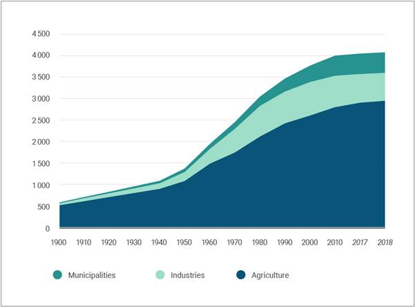
Figure 8. Evolution of global water withdrawals by sector, 1900–2018
Note. Based on FAO AQUASTAT data reported in UNESCO (2023).
The water we do not see
Household taps are only one part of water use. Agriculture accounts for around 72% of global freshwater withdrawals (UNESCO, 2024). Much of the water linked to daily life is therefore used before food or products reach us.
This is the idea of “virtual water”: water used to make a product is effectively traded within that product. Kenya’s Lake Naivasha flower industry makes this visible. One rose is estimated to use 7–13 litres of water, while cut-flower exports represented around 16 M m³ of virtual water each year during 1996–2005 (Mekonnen et al., 2012). More than 90% went to the Netherlands, the UK and Germany. The trade brings jobs and export income, but the water pressure remains in the producing basin.
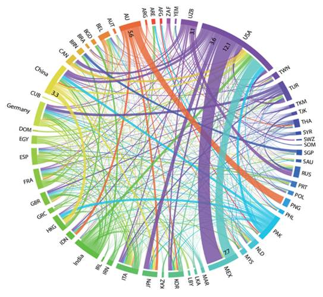
Figure 9. Global virtual blue water flows linked to food trade between countries (1996–2005)
Note. Based on Scanlon et al. (2023, as cited in OECD, 2025, Figure 2.3).
Perth: finding the waste before finding more water
Perth gives a practical example of how better data can reduce demand. The WA Government and Water Corporation’s H₂OME project studied more than 2,000 households across Perth and Peel using digital meters. It found leaks in 30% of participating properties. Outdoor use accounted for 36% of residential drinking water, while showers accounted for 24% (Government of Western Australia, 2024).
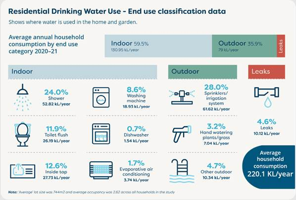
Figure 10. Key findings from the H₂OME residential water-use study in Perth and Peel
Note. Source: Government of Western Australia (2024).
However, the project did not simply tell people to “use less”. It showed where the water was actually going. Water Corporation then targeted garden use, leaks and inefficient showerheads, saving about 1.024 billion litres over the next three years (Government of Western Australia, 2024).
Perth’s smart water meter program continues this approach. Up to 16,000 properties are receiving meters that provide hourly water-use information and alerts for unusual use that may indicate a leak (Water Corporation, 2023–2026), helping households respond much earlier.
The same idea works outside the home. The City of Perth uses 104 smart irrigation controllers across 120 hectares of green space. Weather data can switch watering off after 2 mm or more of rain, while evapotranspiration adjusts schedules to replace moisture lost by plants (City of Perth, 2025). The City also harvests stormwater, reducing groundwater demand by about 70 million litres each year (City of Perth, 2025). This means using the right amount at the right time.
The future: use the right water for the right job
Future water use needs a different model. First, avoidable demand should be reduced before more supply is added. Leaks are the obvious example, while over-irrigation in gardens and farms can push water below the root zone instead of helping plants. Agriculture is especially important because it remains the largest user globally. Australia’s On-Farm Irrigation Efficiency Program has supported more than 1,500 projects and returns an average of 149 GL per year to the environment (Australian Government Department of Climate Change, Energy, the Environment and Water, 2026).
Secondly, water quality should match purpose. Drinking-quality water is essential for drinking, cooking and personal hygiene, but many uses do not need the same level of treatment. WA Health recognises “fit-for-purpose” recycled water for irrigation, agriculture, toilet flushing and dust suppression when treated to the required standard (WA Department of Health, n.d.). Recycled water and harvested stormwater can therefore take a larger role elsewhere.
Third, water should be reused where practical. The traditional pattern is mostly linear: take water, treat it, use it and discharge it. A circular system treats used water to the required quality and returns it for another suitable use, reducing pressure on new sources.
Finally, future water use will be more data-driven. Smart meters, soil-moisture sensors and automated irrigation can respond to actual conditions instead of fixed schedules. The aim is to keep enough moisture in the root zone to avoid plant stress, without adding so much water that it drains beyond the roots (Food and Agriculture Organization of the United Nations, n.d.).
The pressure to change is growing. Global water demand is projected to increase by around 20–30% by 2050 (UN-Water, 2019), while WA’s urban water use is projected to rise from about 550 GL a year to 800–1,000 GL by 2050 (Government of Western Australia, 2016). At the same time, a “just” water system must protect basic access. Around 2.1 billion people worldwide still lack safely managed drinking water (UN-Water, 2026). Essential household water therefore needs to remain safe and affordable, while efficiency efforts should focus on avoidable losses and high discretionary use.
The Sustainable Development Goals (SDGs) are 17 goals adopted by UN Member States to guide social, environmental and economic progress to 2030 (United Nations, n.d.-c). Better water use supports SDG 6, responsible consumption under SDG 12 and climate resilience under SDG 13. The future question should not only be “Where will our next litre come from?”, it should also be: “Did we need to use that litre in the first place?”
Making Water Services Work for Everyone: Cost, Regulation and Justice
Throughout this blog, we’ve talked about where water comes from and the broad treatment and delivery steps it must go through, but we haven’t spent much time talking about the compounding logistics and cost of making it work for everyone, always.
Governments in developed countries spend huge amounts on infrastructure, both to expand networks for growing populations and to maintain existing ones. For example, the Western Australian government budgeted $6.4 billion over the next four years (Water Corporation, 2026a) for its “capital works programme”, with the new Alkimos desal plant a large component of this.
This works in countries like Australia, which have the money to support these programmes and the regulation to drive maintenance work. For many governments, however, these costs are far from trivial. Article 25 of the United Nations’ Universal Declaration of Human Rights, the right to an adequate standard of living (Office of the High Commissioner for Human Rights, 2018), includes access to adequate food, water, and sanitation, and compels government organisations to ensure they provide a water service. In many places, though, the capital investment required to meet these standards is prohibitively expensive. This has led some countries to hand their water utilities to multinational companies willing to invest in developing countries’ infrastructure in return for a long-term service contract.
As these service contracts inherently provide a monopoly for the operator due to the overall efficiency and lower cost of using one network, there is little long term incentive in providing a good standard of continued service to consumers. As such, the maintenance of infrastructure is seen as a direct cost and not a revenue generator and so it is often postponed until total failure, meaning systems are often leaking or have non-continuous coverage, as we’ve seen for Bangladesh.
In these environments, a strong regulatory body is needed to hold the utility accountable to providing a constant and reliable service. Unfortunately, the research suggests that the places where privatisation is most likely to occur, i.e. developing countries, are inherently less likely to have such regulatory structures (Radić et al., 2021).
Case study: The Cochabamba “Water War”
During the early 1980’s, Bolivia experienced growing economic uncertainty and hyperinflation due to its receding GDP and growing population driving income and employment down (Sachs, 1986). By 1985, it requested financial aid from the World Bank, which demanded the privatisation of Bolivia’s utilities to recoup costs. The state’s water contract was given to the multinational Aguas del Tunari on a 40-year term, paired with a guaranteed 15 % minimum annual return on investment (Environment & Society Portal, n.d.).
The structure of this deal meant that financial risk would substantially be placed on the local population, while enabling consumer prices to increase freely, all the while, services were provided preferentially to wealthy residents (Bonnardeaux, 2002). Such areas had a 99% connection rate, compared to the ~4% in the southern suburbs of Cochabamba in 1992. Further, at this time, water losses due to leakages were estimated to be 43% (Bonnardeaux, 2002) due to prolonged under-investment in infrastructure.
By 1999, growing discontent in the country due to the limited services provided and the increasing cost of these services resulted in a series of violent incidents between police and protesters, known as the Cochabamba Water Wars (Environment & Society Portal, n.d.), which eventuated in military intervention and a declared martial law (Bonnardeaux, 2002).
Reviews of these events often identify privatisation as a leading contributor (Britannica, n.d.). However, the regulator of the day had no power to sanction the company and had effectively been made powerless by the government (Bonnardeaux, 2002). Should the regulatory framework have been stronger, it is likely that conditions in Cochabamba would not have been allowed to deteriorate so much and the country might have benefited from continued investment.
So how could things have been different?
A positive example of the privatisation of a water utility can be found in Chile, which has used private sector providers since 1998 (Superintendencia de Servicios Sanitarios, n.d.).
In 1990, Chile established an independent water regulator, the Superintendencia de Servicios Sanitarios (SISS) (Superintendencia de Servicios Sanitarios, n.d.), which developed strong monitoring and enforcement powers. Importantly, these structures were developed prior to privatisation and remained in place through the process, ensuring that operators continually meet investment requirements, maintain service quality, and adhere to environmental standards.
The main difference between the two examples, and the reason privatisation has worked in Chile, is that the regulator has both funding and independence. This gives it real oversight of the operator and the freedom to act without political consequences.
The SDGs outline particular outcomes that should be achieved by 2030; achieving SDG 6: Ensure availability and sustainable management of water and sanitation for all (United Nations, n.d.-b), needs water to be available for all people, everywhere. These outcomes will require significant investment from the public sector; however, in many parts of the world the public sector is not well-functioning and the financial resources are not available.
One could argue that there should be an increased globalised effort led by developed (and rich) countries towards achieving this universal human right, but potentially a more pragmatic approach remains securing private investment in a well-regulated environment, including:
- An independent, well-funded regulator, with the freedom and ability to enforce regulation;
- Clear service standards;
- Regulation of prices;
- Mandatory investment and maintenance;
- Monitoring and meaningful penalties;
- Protections for disadvantaged consumers.
Ultimately, the service provider doesn’t matter, only the service itself. Proper regulation can balance the inherent economic value of water and the right for water to be readily accessible for all.
After the Flush: Two Worlds of Wastewater
But the water lifecycle does not end with how water is allocated or consumed. Once water has done its job, it leaves homes, businesses and industries as wastewater. What happens next can look very different around the world.
Earlier sections showed how unequal access to safe water infrastructure can be, in Bangladesh and Bolivia for example. That inequality continues after water has been used. Meanwhile, cities such as Aarhus in Denmark are asking a very different question: what energy and nutrients can be recovered from wastewater?
So how can some places still be struggling to safely manage wastewater, while others are turning it into a resource?
Before recovery comes sanitation
Globally, safely managing wastewater is a major challenge. In 2024, 3.4 billion people lacked safely managed sanitation, meaning two in every five people did not have sanitation where human waste was safely contained, removed or treated (WHO/UNICEF Joint Monitoring Programme, 2025).
Sanitation is not just about having a toilet. Waste has to move through collection or containment, transport, treatment and safe disposal. If one part fails, untreated sewage can reach rivers, aquifers and communities. This is why SDG 6 is also about safely managing water after use.
Bangladesh: the problem does not stop at the tap
Bangladesh has already been discussed in terms of drinking-water quality, now we’ll focus on wastewater. Dhaka shows how rapidly-growing cities can outpace sanitation infrastructure. According to the World Bank (2026), only around 20% of residents are connected to a piped sewer network, while another 2% are served by functioning faecal-sludge management systems. More than 80% of untreated wastewater and sewage is discharged into the city’s waterways.
The engineering problem is not simply whether treatment technology exists. Wastewater first has to reach treatment, meaning sewer networks, septic systems, sludge collection, transport, treatment capacity and regulation all need to work together.
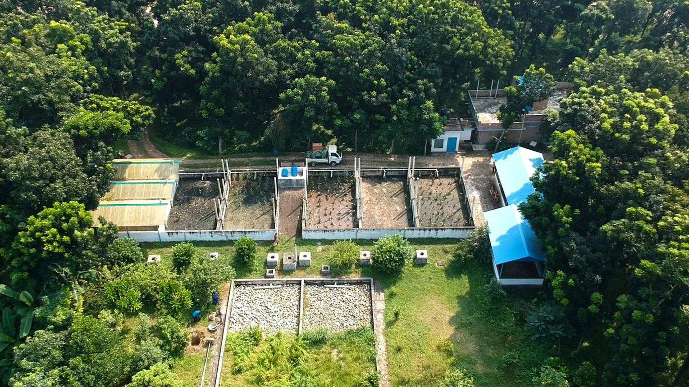
Figure 11. Jhenaidah faecal sludge treatment plant, Bangladesh
Note. Source: SNV (n.d.).
A World Bank-supported programme is aiming to improve safely managed sanitation for around 550,000 people in greater Dhaka while strengthening pollution monitoring and restoring rivers and canals (World Bank, 2026). Bangladesh therefore shows the first priority of wastewater management: before resources can be recovered, sewage has to be safely managed.
When waste starts looking like a resource
Once reliable collection and treatment are established, another possibility appears. Wastewater contains organic material and nutrients such as nitrogen and phosphorus. Left untreated, these contribute to pollution, but inside a controlled treatment system they can become useful resources.
One example is sludge. During anaerobic digestion, microorganisms break down organic matter without oxygen and produce methane-rich biogas. Instead of simply releasing or burning this gas, treatment plants can use it to generate electricity and heat. The question therefore shifts from:
How do we get rid of wastewater safely?
to:
How much value can we recover while treating it safely?
Woodman Point: Perth begins to recover value in wastewater
Perth is already moving in this direction at the Woodman Point Water Resource Recovery Facility. The plant treats more than 150 million litres of wastewater each day from around 900,000 homes and businesses in Perth’s southern suburbs (Water Corporation, n.d.-d).
Sludge produced during treatment undergoes anaerobic digestion, producing biosolids and biogas. The biosolids can be used in broadacre agriculture, while the biogas generates electricity and heat (Water Corporation, n.d.-c). Water Corporation reports that biogas currently supplies around one-quarter of Woodman Point’s electricity needs, with upgrades expected to increase this to almost half (Water Corporation, n.d.-c).
Woodman Point therefore sits between the two worlds: safe treatment remains essential, but recovering useful resources is increasingly part of the process.
Marselisborg: can a wastewater plant produce more energy than it uses?
Marselisborg Wastewater Treatment Plant in Aarhus, Denmark, shows how far this can go.
Like desalination, wastewater treatment normally requires significant electricity (particularly for aeration during biological treatment) (International Water Association, n.d.-b). Marselisborg tackled both sides of the equation: reducing the energy needed for treatment while increasing the energy recovered from wastewater.
The plant introduced improved process control, more efficient compressors, fine-bubble aeration optimisation and anammox treatment for sludge liquor. Together, these changes reduced electricity consumption by around 25%, or approximately 1 GWh per year (International Water Association, n.d.-a).
At the same time, organic material removed from wastewater is directed to anaerobic digestion. The resulting biogas is used in combined heat and power engines, producing electricity and useful heat. Improved biogas utilisation increased electricity production by approximately another 1 GWh per year (International Water Association, n.d.-a).
The result is unusual for a wastewater treatment plant. Aarhus Vand reported that in 2019 Marselisborg produced 50% more energy than it used to treat wastewater (Aarhus Vand, n.d.). Instead of being purely an energy consumer, the plant had become an energy producer.
Energy is not the only resource being recovered. Phosphorus can be a polluter if its discharge is mismanaged, but it is also essential for fertiliser production. Marselisborg has focused on recovering phosphorus rather than simply discarding it (International Water Association, n.d.-a). Aarhus Vand has also reported recovering struvite, a phosphorus-rich material that can be converted into fertiliser, across its wastewater facilities (Aarhus Vand, 2022).
This connects strongly with SDG 12, Responsible Consumption and Production. A material does not necessarily remain “waste” simply because it arrives at a wastewater plant.
However, Marselisborg cannot simply be copied everywhere. Advanced controls, digesters, efficient aeration and nutrient-recovery systems require investment, skilled operators and, most importantly, an already functioning sanitation network.
From sanitation to a circular economy
Bangladesh and Marselisborg represent very different stages of the same wastewater challenge. In one, the priority is collecting and safely treating wastewater. In the other, the question has moved toward how much energy and material can be recovered.
Neither challenge should be ignored. SDG 6 requires safe sanitation first, while SDG 12 pushes established systems toward using resources more responsibly. Moving from pollution control to resource recovery is an exciting direction, but a circular future cannot come at the expense of basic sanitation.
And even after recovering energy and nutrients, the largest resource in wastewater is still there: the water itself. If that water can be treated safely enough, does its journey really have to end with discharge?
That takes us to water reuse.
Closing the Loop: When Wastewater Becomes Water Again
Once energy and nutrients have been recovered from wastewater, the biggest resource left is the water itself. At this point there is another decision to make: discharge the water, or use it again.
Some cities are already taking reuse much further than irrigation and industry. Windhoek (Namibia) and Orange County (California) both feed treated wastewater into their drinking-water systems, but they do it in very different ways.
Windhoek: direct potable reuse
Like Perth, Windhoek has faced a fairly simple problem: there isn’t enough water available locally. In addition, Namibia is extremely arid. Therefore, it has not been feasible for the city to continue to rely solely upon conventional freshwater sources as demand continues to increase.
Since opening in 2002, the New Goreangab Water Reclamation Plant has produced approximately 21 million litres of drinking water per day from reclaimed wastewater (VA Tech WABAG, n.d.) as part of Windhoek’s drinking-water supply. The water passes through multiple treatment barriers, including ozonation, filtration, activated carbon and ultrafiltration, before it is distributed across the city.
This is referred to as “direct potable reuse.”
Direct potable reuse is often nicknamed “toilet-to-tap”, which may explain why some people find the idea unpalatable. But the more useful question is not where the water came from, but whether it is safe once it leaves the treatment process (it is).
Technology is only part of the story. Direct potable reuse also depends on public trust in the monitoring systems and in the organisations supplying the water. Research on public attitudes to recycled water shows that perceived risk, emotional reactions and trust all influence whether people accept it (Smith et al., 2018).
Windhoek shows that direct potable reuse can become a normal part of a city’s water supply when other sources are limited and reuse becomes necessary, the kind of pressure that took Cape Town close to “Day Zero”.
Orange County: taking the groundwater route
Orange County purifies its wastewater to a high standard using microfiltration, reverse osmosis and UV treatment with hydrogen peroxide, then uses this purified water to recharge the local groundwater basin (Orange County Water District, n.d.) rather than placing it directly in the public drinking water distribution system.
This represents indirect potable reuse.
Orange County’s system operates at a much larger scale than Windhoek’s. The GWRS can produce 130 million US gallons (about 492 million litres) each day, enough to supply approximately one million people (Orange County Water District, n.d.), and provides full recycling of all the reclaimable wastewater available from the Orange County Sanitation District.
In addition to providing another source of water, some of the purified water produced by the GWRS is injected underground in areas where seawater intrusion has been identified. These so called “barrier wells” support GDEs by protecting water quality availability in the aquifer as groundwater withdrawal continues (Orange County Water District, n.d.).
Windhoek and Orange County are both closing the loop, but they do it in different ways.
Windhoek returns highly treated recycled water directly to the drinking-water supply, while Orange County uses the groundwater basin as an extra step before the water eventually returns to supply.
What works best for closing the loop varies depending upon the pre-existing availability of potable water resources, regional geology, existing infrastructure, costs, regulations and social acceptance.
Where does Perth fit?
Perth uses an approach that is quite similar to Orange County.
Perth’s Managed Aquifer Recharge (MAR) scheme is at Craigie, where treated effluent from the Beenyup Wastewater Treatment Plant is purified at the Advanced Water Recycling Plant and then recharged into deep confined aquifers beneath Gnangara, the groundwater system we met at the start of this blog. Today, the scheme can recharge approximately 28 billion litres of reclaimed water per year (Water Corporation, n.d.-b).
Reclaimed water is later extracted from the same aquifer, further along its flow path, and treated again before being supplied to residents of Perth (Water Corporation, n.d.-b).
Therefore, groundwater replenishment in Perth is no longer merely a concept or a pilot project; it is a component of Perth’s overall water supply network. However, it comes at a high cost, even though a cheaper (if less palatable) option exists: using the treated water directly, as Windhoek does.
The next step is deciding how much further reuse should go.
Groundwater replenishment is unlikely to become Perth’s main supply, because some water is always lost in the process. But because it does not depend on rainfall, it can provide a reliable and growing share of the city’s water as the climate dries.
If the treatment is safe, is the real challenge whether people are comfortable with where their water has been before.
Windhoek and Orange County both illustrate why these questions can’t be resolved solely through engineering. While reuse facilities require good treatment and monitoring practices, successful reuse systems will also require public trust.
As with desalination, cost is another consideration. Large-scale reuse systems and the infrastructure supporting them can cost large sums of money to construct and operate. In addition to providing reliable new supplies of water to improve water security, such new supplies shouldn’t be limited to those who have sufficient funds. Therefore, new reuse systems must make treated water available safely and affordably and ensure that lower income communities do not receive inferior quality water or less reliable service, as happened in Cochabamba. Costs could potentially be reduced, for instance by cutting out the aquifer recharge step and tapping the treated water directly.
Keeping treated water in circulation instead of releasing it into receiving waters supports SDG 6, Clean Water and Sanitation. Treating wastewater as something valuable rather than disposable also supports SDG 12, Responsible Consumption and Production. And using water sources that are less dependent on rainfall helps cities adapt to a changing climate, supporting SDG 13, Climate Action (United Nations, n.d.-d).
Conclusion: One Journey, Many Solutions
Following water from its source through the whole system shows that there cannot be a single solution to meet our water needs in the future. Dams alone can no longer supply all of Perth’s drinking water. Groundwater has limits, as Gnangara shows. Desalination offers reliability, but at the cost of capital investment, energy use and environmental impacts such as brine. And once treated water reaches the distribution network, it needs to be used carefully, and managed and regulated fairly, to protect public health and safety, as Bangladesh and Cochabamba remind us.
Reuse gives us a chance to keep this water in use instead of treating discharge as the end of the line.
Windhoek, Orange County, Perth and Singapore (through NEWater) all show different ways this can work. Their systems are not the same, and what works in one city may not suit another. But they all show the same thing: treated wastewater can still have a useful role.
Instead of being the end of the journey, it can become part of the water supply again.
This blog has shown that there is no single way to provide sustainable and just water services into the future. Perth’s groundwater is under strain, desalination is reliable but energy-hungry, and recycled water is only as good as the public trust behind it. Meanwhile, millions of people in places like Bangladesh still lack safe drinking water and sanitation.
Keeping things as they are will not work for anyone. A just water system needs sustained investment in infrastructure and maintenance, strong and independent regulation, partnerships that help countries with fewer resources, and increased education everywhere. It also needs better use of the water we already have and minimise waste wherever possible. Most importantly, it needs to treat safe water as a right for everyone, not a service for those who can afford it.
Check this out!

References
Aarhus Vand. (n.d.). Marselisborg Renseanlæg.
Aarhus Vand. (2022). Sustainability and resource-recovery results.
Abdelraouf, M. (2024, October). Water issues in the GCC countries: Status, challenges, and solutions. Gulf Research Center. https://www.grc.net/public/documents/6714eeb26d491WaterIssuesintheGCCCountries2.pdf
Auditor General for Western Australia. (2007, November). Renewable energy: Knowing what we are getting (Report No. 12). https://audit.wa.gov.au/wp-content/uploads/2013/05/report2007_12.pdf
Australian Government Department of Climate Change, Energy, the Environment and Water. (2026). Water infrastructure investments. https://www.dcceew.gov.au/water/mdb/programs/infrastructure-benefits
Bangladesh Bureau of Statistics & UNICEF. (2025). Bangladesh Multiple Indicator Cluster Survey 2025: Progotir pathey. Bangladesh Bureau of Statistics.
BMT Western Australia Pty Ltd. (2019, March). Perth desalination plant discharge modelling: Effects of desalination discharges on dissolved oxygen (Report No. R-1334_10-1). https://www.epa.wa.gov.au/sites/default/files/Referral_Documentation/9.App%20F_Dissolved%20Oxygen%20Modelling%20Summary.pdf
Bonnardeaux, D. (2002). The Cochabamba “water war”: An anti-privatisation poster child? ResearchGate. https://www.researchgate.net/publication/252492357_The_Cochabamba_Water_War_An_Anti-Privatisation_Poster_Child
Britannica. (n.d.). Cochabamba water war. https://www.britannica.com/event/Cochabamba-water-war
City of Cape Town. (2019, May 30). City’s Water Strategy approved by Council. https://www.capetown.gov.za/media-and-news/city-s-water-strategy-approved-by-council/
City of Perth. (2025). How Perth is reducing its water consumption. https://perth.wa.gov.au/news-and-updates/all-news/how-perth-is-reducing-its-water-consumption
Climate Impact Lab. (2026). 451,000 at risk. https://impactlab.org/research/451000-at-risk/
Department of Water and Environmental Regulation. (2022). Gnangara groundwater allocation plan: Methods. Government of Western Australia. https://www.wa.gov.au/system/files/2022-06/Gnangara-groundwater-allocation-plan-Methods.pdf
Department of Water and Environmental Regulation. (2025, January 31). Recharge Estimation Collaboration project. Government of Western Australia. https://www.wa.gov.au/service/natural-resources/water-resources/recharge-estimation-collaboration-project
Department of Water and Environmental Regulation. (2026, May 21). Rebalancing our groundwater. Government of Western Australia. https://www.wa.gov.au/service/natural-resources/water-resources/rebalancing-our-groundwater
Environment & Society Portal. (n.d.). Cochabamba water wars. Rachel Carson Center. https://www.environmentandsociety.org/tools/keywords/cochabamba-water-wars
Faunt, C. C., Traum, J. A., Boyce, S. E., Seymour, W. A., Jachens, E. R., Brandt, J. T., Sneed, M., Bond, S., & Marcelli, M. (2024). Groundwater sustainability and land subsidence in California’s Central Valley. Water, 16(8), 1189. https://doi.org/10.3390/w16081189
Food and Agriculture Organization of the United Nations. (n.d.). Applicability and limitations of irrigation scheduling methods and techniques. https://www.fao.org/4/w4367e/w4367e04.htm
Government of Israel. (n.d.). PPP infrastructure opportunities in Israel [PDF]. https://www.gov.il/BlobFolder/generalpage/ppp-infrastructure-opportunities-in-israel/en/Projects_files_ppp-infrastructure-opportunities-in-israel-en.pdf
Government of Western Australia. (2016). Water for growth: Western Australia’s water supply and demand outlook to 2050. https://www.wa.gov.au/system/files/2022-10/Water-for-Growth-WAs-water-supply-and-demand-outlook-to-2050.pdf
Government of Western Australia. (2024). H₂OME project helping households adapt to climate change. https://www.wa.gov.au/service/natural-resources/water-resources/h2ome-project-helping-households-adapt-climate-change
Impacts of desalination brine discharge on benthic ecosystems. (2024). Environmental Science & Technology, 58. https://doi.org/10.1021/acs.est.3c07748
International Energy Agency. (2026). Wired for water: How electrification is transforming desalination. https://www.iea.org/commentaries/wired-for-water-how-electrification-is-transforming-desalination
International Water Association. (n.d.-a). The circular economy of water in Aarhus.
International Water Association. (n.d.-b). Wastewater-treatment energy and aeration resources.
Jones, E., Qadir, M., van Vliet, M. T. H., Smakhtin, V., & Kang, S.-M. (2019). The state of desalination and brine production: A global outlook. Science of the Total Environment. https://doi.org/10.1016/j.scitotenv.2018.12.076
Mekonnen, M. M., Hoekstra, A. Y., & Becht, R. (2012). Mitigating the water footprint of export cut flowers from the Lake Naivasha Basin, Kenya. Water Resources Management, 26, 3725–3742. https://doi.org/10.1007/s11269-012-0099-9
Michel, D. (2026, March 19). Could Iran disrupt the Gulf countries’ desalinated water supplies? Center for Strategic and International Studies. https://www.csis.org/analysis/could-iran-disrupt-gulf-countries-desalinated-water-supplies
National Health and Medical Research Council & Natural Resource Management Ministerial Council. (2011). Australian drinking water guidelines. https://www.nhmrc.gov.au/about-us/publications/australian-drinking-water-guidelines
National Oceanic and Atmospheric Administration. (2024, June 16). How much water is in the ocean? NOAA National Ocean Service. https://oceanservice.noaa.gov/facts/oceanwater.html
OECD. (2025). Embedding water-related risks in financial stability frameworks. https://www.oecd.org/en/publications/embedding-water-related-risks-in-financial-stability-frameworks_ee1757f9-en/full-report/water-is-at-the-heart-of-economic-and-financial-systems_fcfba4d2.html
Office of the High Commissioner for Human Rights. (2018). Universal Declaration of Human Rights at 70: 30 articles on 30 articles – Article 25. https://www.ohchr.org/en/press-releases/2018/12/universal-declaration-human-rights-70-30-articles-30-articles-article-25
Orange County Water District. (n.d.). Groundwater replenishment system (GWRS). https://www.ocwd.com/gwrs/
Parliament of Western Australia. (2024, May 22). Assembly Estimates Committee B—Wednesday, 22 May 2024. Hansard. https://www.parliament.wa.gov.au/Hansard/hansard.nsf/0/E674CC4247D33B2D48258B3400099767/$File/A41%20S1%2020240522%20All.pdf
PUB. (n.d.). NEWater. https://www.pub.gov.sg/watersupply/fournationaltaps/newater
PUB. (2021, February). Keppel and PUB officially open Keppel Marina East Desalination Plant [Media release]. https://www.pub.gov.sg/Resources/News-Room/PressReleases/2021/02/OfficialOpeningofKMEDP
Radić, M., Ravasi, D., & Munir, K. (2021). Privatization: Implications of a shift from state to private ownership. Journal of Management, 47(6), 1596–1629. https://doi.org/10.1177/0149206320988356
RET International. (n.d.). Our commitment to the SDGs. https://theret.org/commitment-to-sdgs/
Sachs, J. D. (1986). The Bolivian hyperinflation and stabilization (NBER Working Paper No. 2073). https://www.econstor.eu/bitstream/10419/72915/1/622394053.pdf
Sea Recovery. (n.d.). What is reverse osmosis? https://searecovery.org/what-is-reverse-osmosis/
Smith, H. M., Brouwer, S., Jeffrey, P., & Frijns, J. (2018). Public responses to water reuse—Understanding the evidence. Journal of Environmental Management, 207, 43–50. https://doi.org/10.1016/j.jenvman.2017.11.021
SNV. (n.d.). [Webpage about faecal sludge management in Bangladesh]. https://www.snv.org/update/beginnings-promising-faecal-sludge-management-system
Superintendencia de Servicios Sanitarios. (n.d.). Superintendencia de Servicios Sanitarios (SISS) [Homepage]. http://www.siss.cl
UNESCO. (2023). The United Nations World Water Development Report 2023: Partnerships and cooperation for water. https://www.unesco.org/en/reports/wwdr/2023
UNESCO. (2024). UN World Water Development Report 2024: Food security, a key driver of peace and prosperity. https://www.unesco.org/reports/wwdr/en/2024/agriculture
United Nations. (n.d.-a). Goal 13: Take urgent action to combat climate change and its impacts. https://sdgs.un.org/goals/goal13
United Nations. (n.d.-b). Goal 6: Ensure availability and sustainable management of water and sanitation for all. https://sdgs.un.org/goals/goal6
United Nations. (n.d.-c). Sustainable Development Goals. https://sdgs.un.org/goals
United Nations. (n.d.-d). The 17 goals. Sustainable Development Goals. https://sdgs.un.org/goals
United Nations General Assembly. (2010). The human right to water and sanitation (A/RES/64/292). https://docs.un.org/en/A/RES/64/292
UN-Water. (2019). United Nations World Water Development Report 2019: Leaving no one behind. https://www.unwater.org/publications/un-world-water-development-report-2019
UN-Water. (2020). UN World Water Development Report 2020: Water and climate change. https://www.unwater.org/publications/un-world-water-development-report-2020
UN-Water. (2026). WHO: Updated guidelines for drinking-water quality. https://www.unwater.org/news/who-updated-guidelines-drinking-water-quality
U.S. Geological Survey. (2018, December 7). Areas of land subsidence in California. https://ca.water.usgs.gov/land_subsidence/california-subsidence-areas.html
Utility Magazine. (2019). Emu Downs Wind Farm Joint Venture: 2019 performance audit and asset management system review. https://utilitymagazine.com.au/emu-downs-wind-farm-joint-venture-2019-performance-audit-and-asset-management-system-review/
VA Tech WABAG. (n.d.). Direct potable water reuse water treatment plant, Windhoek. https://www.wabag.com/project/direct-potable-water-reuse-water-treatment-plant-windhoek/
WA Department of Health. (n.d.). Recycled water in WA. https://www.health.wa.gov.au/Articles/N_R/Recycled-water-in-WA
Water Corporation. (n.d.-a). 100 years on: How our water sources have changed. https://www.watercorporation.com.au/our-water/perths-water-supply/how-our-water-sources-have-changed
Water Corporation. (n.d.-b). Groundwater replenishment. https://www.watercorporation.com.au/our-water/groundwater/groundwater-replenishment
Water Corporation. (n.d.-c). Recovering resources and biosolids.
Water Corporation. (n.d.-d). Woodman Point Water Resource Recovery Facility upgrade / sustainability upgrade.
Water Corporation. (2018). Drinking water quality annual report 2017–18. Water Corporation of Western Australia. https://pw-cdn.watercorporation.com.au/-/media/watercorp/documents/about-us/our-performance/drinking-water-quality/past-water-quality-annual-reports/drinking-water-quality-annual-report-2018.pdf
Water Corporation. (2021, November). Plan to rebalance precious groundwater resources [Media release]. https://www.watercorporation.com.au/About-us/Media-releases/2021/November-2021/Plan-to-rebalance-precious-groundwater-resources
Water Corporation. (2023–2026). Perth smart water meter program. https://www.watercorporation.com.au/Outages-and-works/Ongoing-Works/Perth-smart-water-meter-program
Water Corporation. (2026a). Cook Government boosts water security with record budget funding. https://www.watercorporation.com.au/about-us/media-releases/2026/april-2026/cook-government-boosts-water-security-with-record-budget-funding
Water Corporation. (2026b). Integrated water supply scheme. Water Corporation of Western Australia. https://www.watercorporation.com.au/our-water/perths-water-supply/integrated-water-supply-scheme
WHO/UNICEF Joint Monitoring Programme. (2025). Progress on household drinking water, sanitation and hygiene 2000–2024.
World Bank. (2026). World Bank helps reduce Dhaka’s water pollution.
World Bank Group. (n.d.). Italy. Climate Change Knowledge Portal. https://climateknowledgeportal.worldbank.org/country/italy
World Health Organization. (n.d.). Arsenic [Fact sheet]. https://www.who.int/news-room/fact-sheets/detail/arsenic
World Health Organization. (2022). Guidelines for drinking-water quality: Fourth edition incorporating the first and second addenda. https://www.who.int/publications/i/item/9789240045064